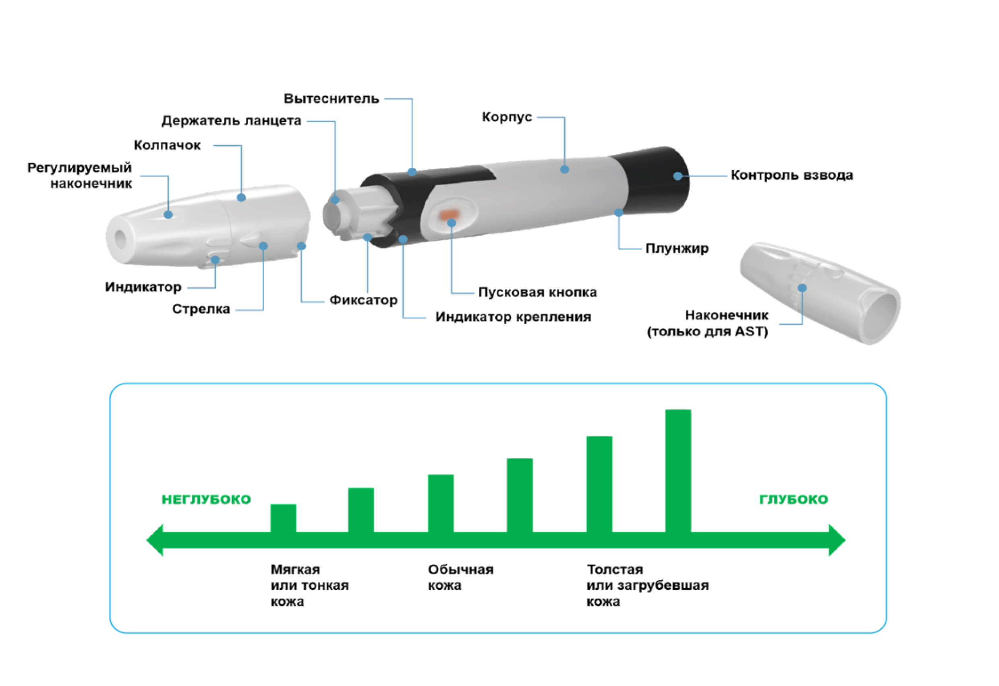
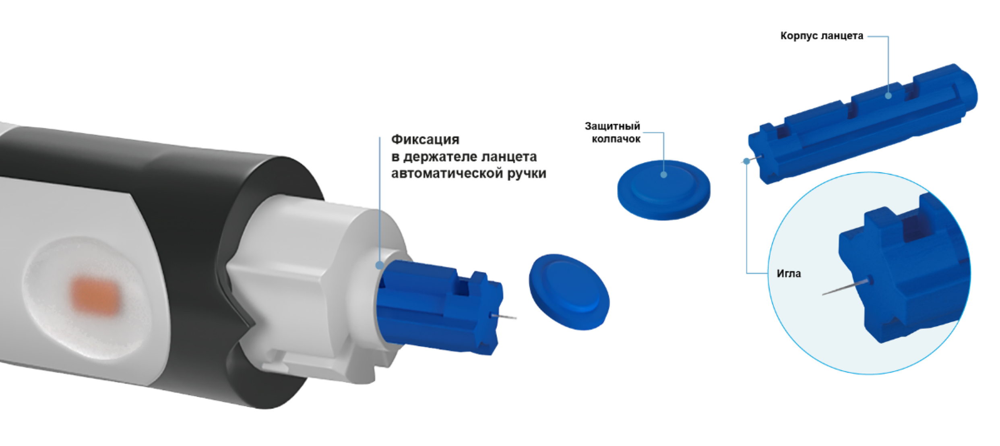

Просто
Быстро
Безболезненно

Основными элементами ручки являются:
- колпачок
- клавиша взвода
- пусковая кнопка
- держатель ланцета
- индикаторная стрелка глубины прокола кожи
Для получения образца диагностического материала – крови, применяется автоматическая ручка для прокалывания кожи, чтобы значительно снизить неприятные ощущения.
Как правило дизайн прокалывателя выполнен как обычная ручка, чтобы не привлекать к себе внимания и не выглядеть как прибор медицинского назначения.Автоматическая ручка для прокалывания, используется совместно с ланцетом для снижения неприятных ощущений прокола. Ручка-прокалыватель имеет эргономичный корпус для удобоваримого использования при осуществлении прокола.
Ручка-прокалыватель сконструирована так, что установленный ланцет полностью спрятан под колпачком. Под действием сокращения растянутой пружины, приведенной в действие при помощи пусковой кнопки, игла ланцета прокалывает кожу, затем пружина приходит в исходное положение, при котором игла ланцета возвращается под колпачок ручки для прокалывания.
На колпачке имеется возможность выбора шести вариантов глубины прокола кожи: для мягкой и тонкой, обычной и толстой, загрубевшей. Чем длиннее линия индикатора, тем больше глубина прокола. Пользователь может выбрать подходящий для него вариант.
Преимущества автоматической ручки-прокалывателя:
Эргономичный корпус
Простая в использовании
Механизм, обеспечивающий безопасное и безболезненное прокалывание
Бесшумный и мягкий механизм
Индикация взвода на спусковой кнопке
Высокоскоростной отстрел предотвращает дополнительную травматизацию тканей
Автоматический выталкиватель ланцета, позволяющий быстро и безопасно удалить использованный ланцет
Наличие наконечника для взятия образца крови из альтернативных мест
Технические характеристики ручки-прокалывателя:
Модель
TD-5010
Сила пружины контроля взвода:
6.0 Н ± 10%
Габаритные размеры:
118,75(±0,2) мм x 17,45 (±0,1)мм
Масса:
16,5 г ± 15%
Энергия удара (воздействия на ланцет):
45 мДж ± 10%
Краткое руководство использования ручки-прокалывателя:
Снять колпачек ручки для
прокалывания, потянув
его вверх
Вставить ланцет
в держатель и надавить
на него для закрепления
Снять защитную
крышку с ланцета
Надеть колпачек ручки
и провернуть его до
щелчка для закрепления
Выбрать глубину прокола,
поворачивая регулируемый
наконечник
Взвести пружинный механизм, потянув
за ручку взвода. Цвет пусковой
кнопкиизменился — ручка готова
Помимо традиционного взятия капли крови из кончиков пальцев ручка-прокалыватель позволяет получать образцы капиллярной крови из альтернативных мест, таких, как: плечо, предплечье, бедро, голень.
1 Область ладони под мизинцем
2 Область ладони под большим пальцем
3 Внутренняя сторона предплечья
4 Внешняя сторона предплечья
5 Плечо
6 Область бедра
7 Область икроножной мышцы
Ручка используется совместно с ланцетом - одноразовым элементом с иголкой.
Ланцеты для ручки-прокалывателя
Ланцеты непосредственно предназначены для прокола кожи с целью получения пробы крови. Обычно применяется совместно с ручкой для прокалывания автоматической для снижения неприятных ощущений при выполнении прокола кожи.
Ланцеты SelfyCheck представляет собой заточенную иглу из высококачественной нержавеющей стали SUS304, заключенную в пластиковый корпус. Защитная крышка ланцета является стерильным барьером и снимается с острия иглы только после того, как ланцет установлен в гнездо держателя ручки для прокалывания.
Ланцет – это один из самых распространенных расходных материалов для проведения измерения. Их применение эффективно, безопасно и практически безболезненно, риск заражения всевозможными инфекциями снижается во много раз.

Как часто необходимо
осуществлять замену ланцета?
Многие специалисты рекомендуют использовать ланцет для прокалывателя только один раз. Это связано с тем, что перед использованием игла является стерильной. После ее обнажения и прокола происходит загрязнение поверхности иглы микроорганизмами.
Нужно помнить, что это повышает риск развития воспалительных и инфекционных процессов с каждым последующим проколом все выше и выше.
Технические характеристики ручки-прокалывателя:
Модель
TD-5084
- Длина корпуса с надетой защитной крышкой 32,0(±1,5) мм
- Длина открытой части иглы 3,2(±0,3) мм
Калибр иглы
30G/0,3 мм
Масса нетто
0,4г ±5%
Масса брутто (10 шт)
4,7г ±0,5
Шероховатость
Ra не более 0.8мкм
Твердость
Не менее 450 HV0.3
Стерилизация
Кобальт-60γ–излучение
Доза стерилизации
18,7 кГр
Срок хранения ланцетов
5 лет после радиационной
стерилизации